1) Carga atual x cenários IBS/CBS (24% / 26% / 28%)
Consolidado das saídas (VL_ITEM) vs carga informada no item.
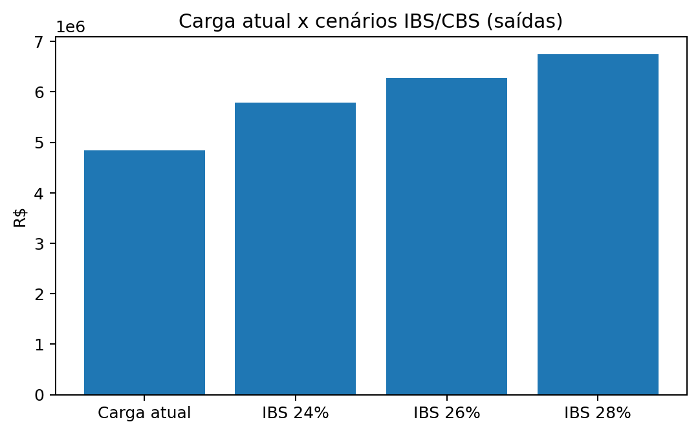
Leitura
Gap bruto para mapear hotspots e iniciar simulação líquida.
2) Top CFOP por receita – carga atual x IBS 26%
Escopo mínimo do backlog de adequação.
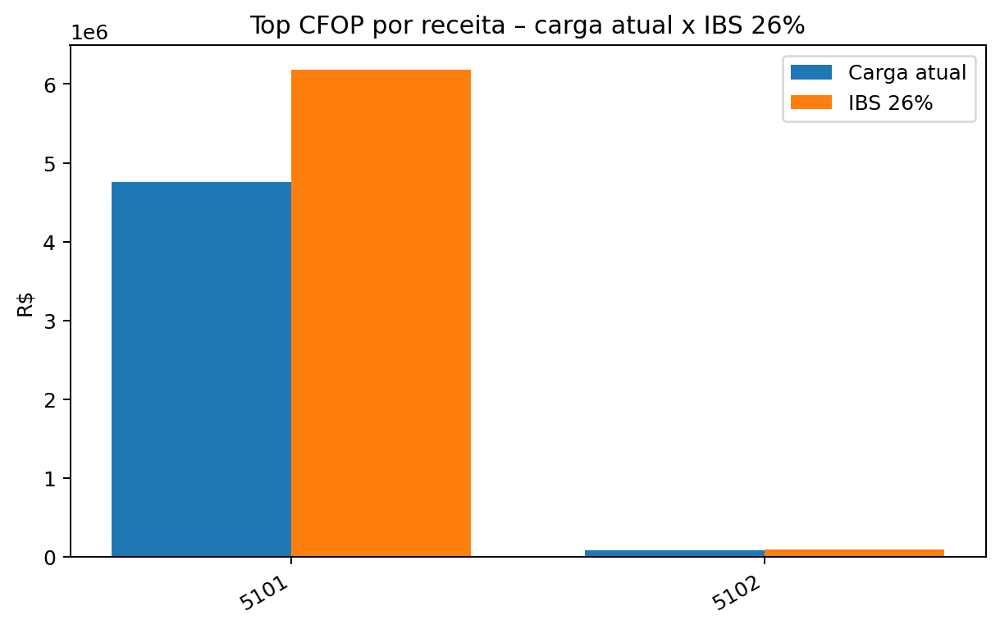
Tabela
| CFOP | Receita | Carga atual | IBS 26% | Δ 26% |
|---|---|---|---|---|
| 5101 | R$ 23.776.327,00 | R$ 4.755.265,40 | R$ 6.181.845,02 | R$ 1.426.579,62 |
| 5102 | R$ 342.610,50 | R$ 81.760,50 | R$ 89.078,73 | R$ 7.318,23 |
3) Receita por UF de destino (Top 10)
Destino para precificação e contratos.
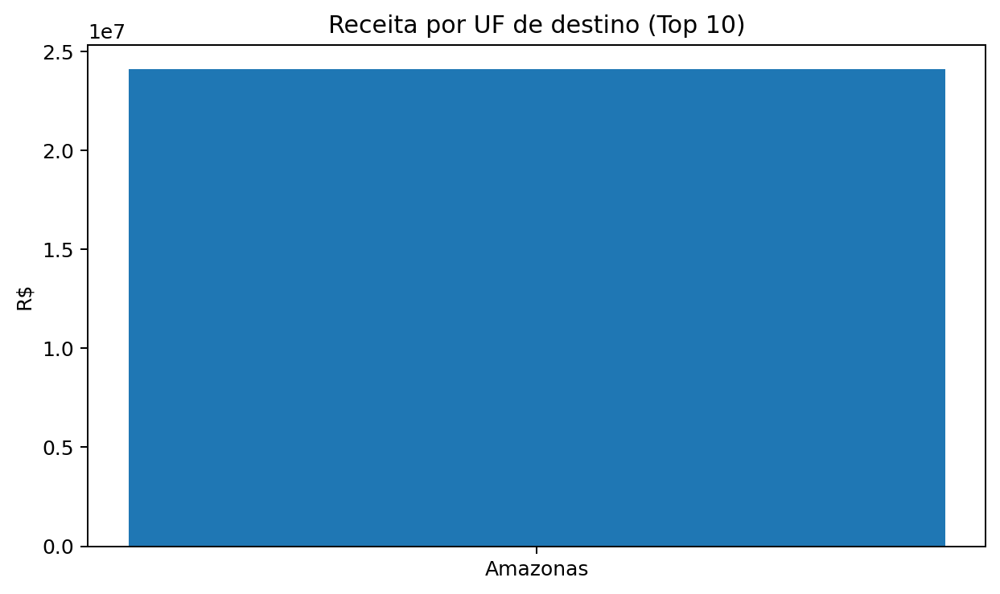
Tabela
| UF | Receita | Δ 26% |
|---|---|---|
| Amazonas | R$ 24.118.937,50 | R$ 1.433.897,85 |
4) Sensibilidade IBS/CBS (24/26/28)
Bandas para stress test.
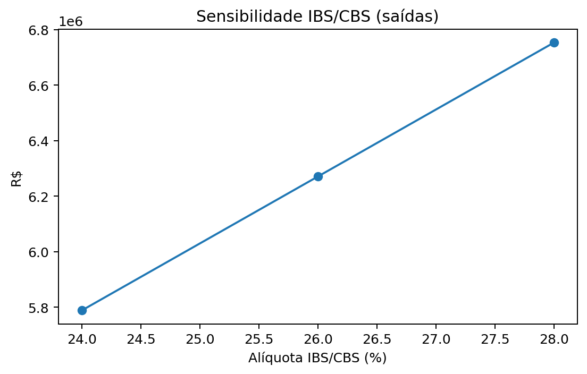
Uso
- 24% e 28% como limites
- 26% como referência
5) Heatmap CFOP x UF – hotspots de Δ (26% − carga atual)
Top 12×12 por receita.
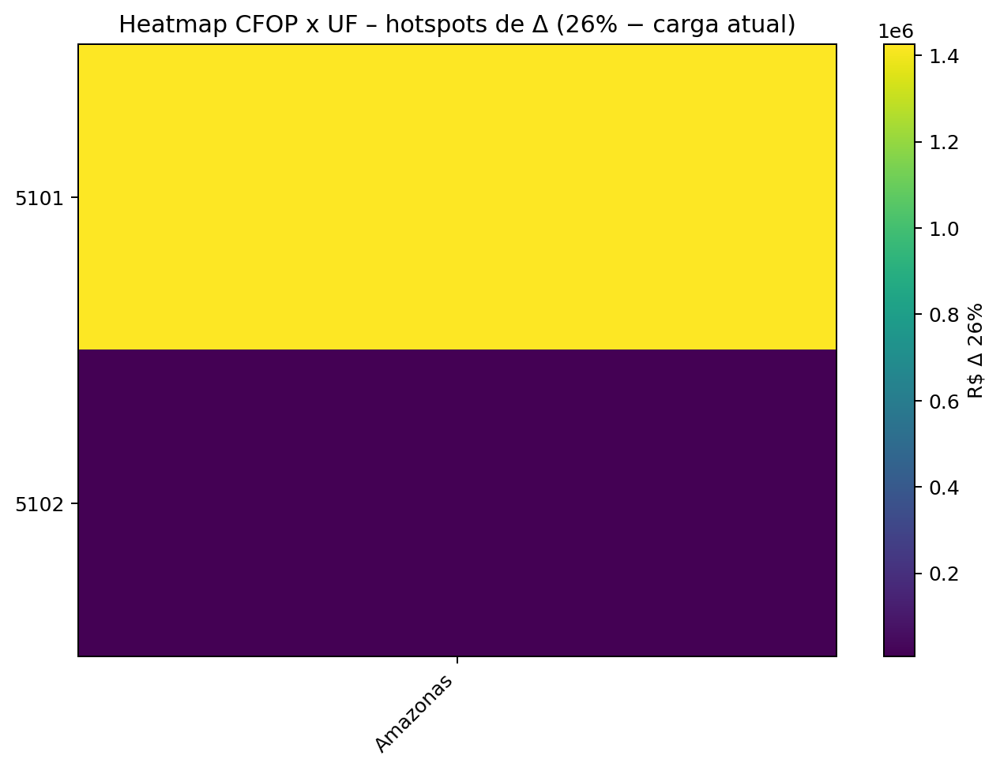
Ação
Transforme células quentes em cards: revisar regra, preço e contrato por praça.
6) Evolução mensal – receita x carga atual x IBS 26%
Sazonalidade e exposição.
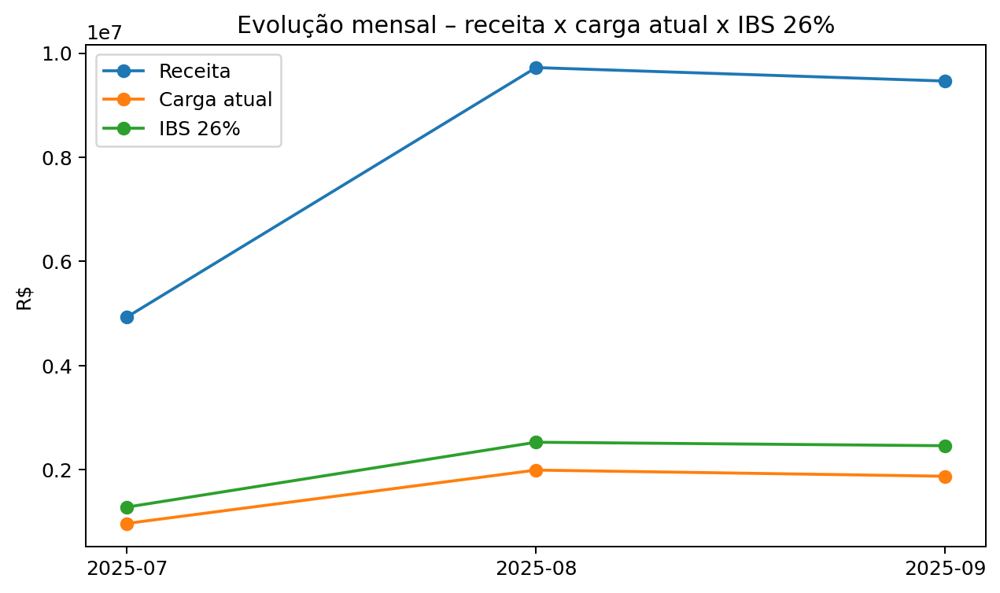
Leitura
Meses pico devem ser foco de testes e governança de dados.
7) Mix de tributos atuais (ICMS/PIS/COFINS) – por mês
Composição da carga atual.
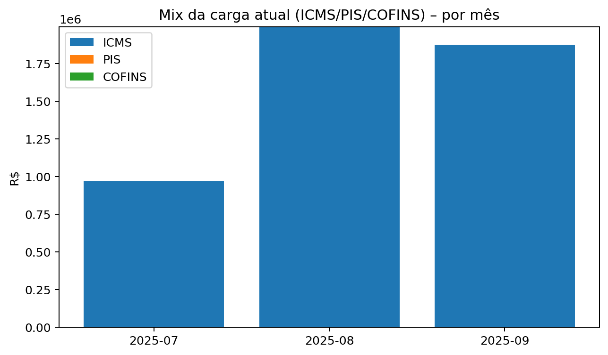
Sinal
Variações fortes podem indicar mudança de regime/benefício/parametrização.
8) Distribuição da alíquota efetiva atual
Dispersão e mistura de tratamentos.
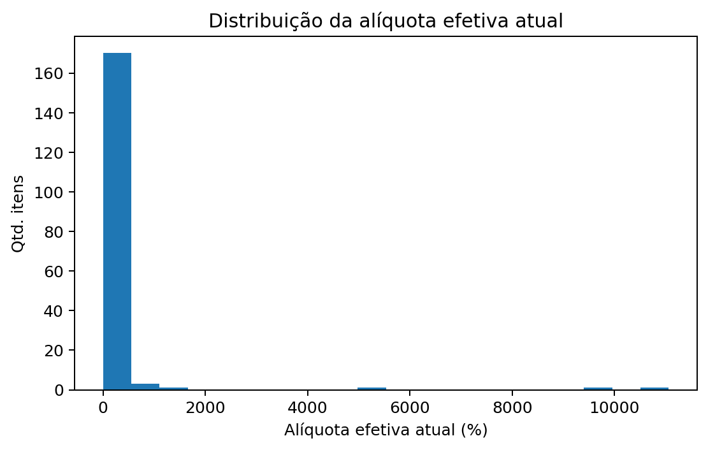
Leitura
Muitos itens ~0% sugerem ST/monofásico/diferimento ou evidência fora do item.
9) Dispersão – tamanho do item x alíquota efetiva
Identifica itens grandes fora da curva.
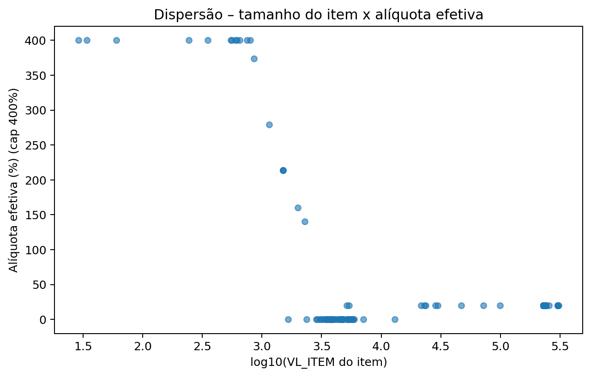
Como usar
- VL_ITEM alto e efetiva baixa → revisar regra
- Efetiva muito alta → validar base/cálculo
10) Boxplot – alíquota efetiva por CFOP (Top 8)
Variabilidade dentro do CFOP.
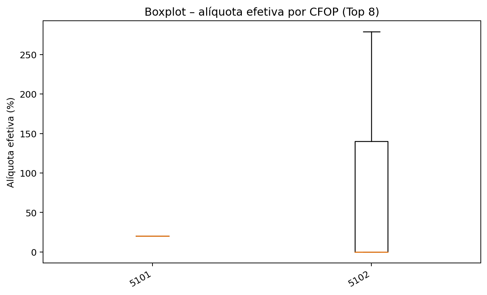
Sinal
Caixas largas sugerem mistura de NCM/regime/parametrização.
11) Top destinatários (proxy por documento) – receita
Foco comercial e cláusulas de repasse.
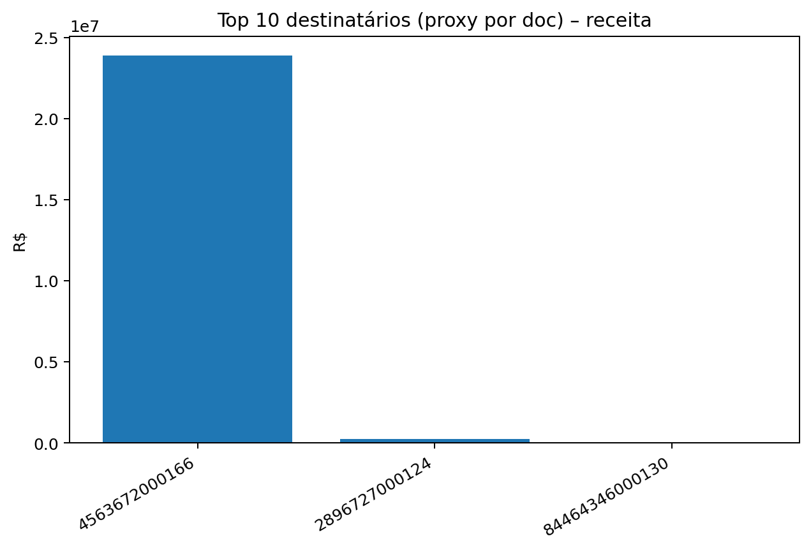
Tabela
| Destinatário (doc) | Receita | Carga atual |
|---|---|---|
| 4563672000166 | R$ 23.885.902,00 | R$ 4.834.924,40 |
| 2896727000124 | R$ 222.528,00 | R$ 0,00 |
| 84464346000130 | R$ 10.507,50 | R$ 2.101,50 |
12) Distribuição de CST_ICMS (Top 12)
Mapa de tratamento ICMS informado.
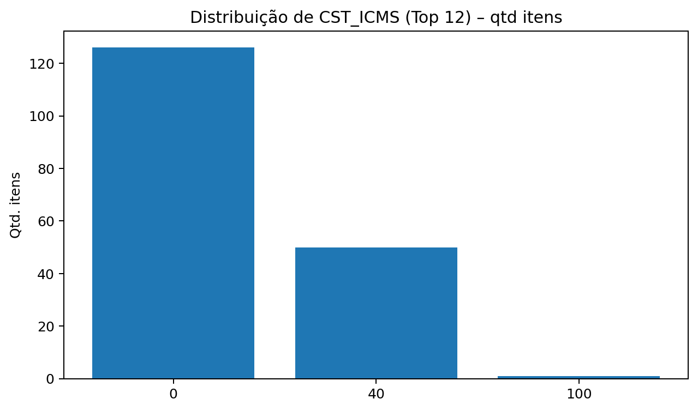
Uso
Concilie CST/CFOP/NCM e desenhe mapeamento para IBS/CBS.
13) Heatmap CFOP x NCM – concentração de receita
Top 10×10 por receita.
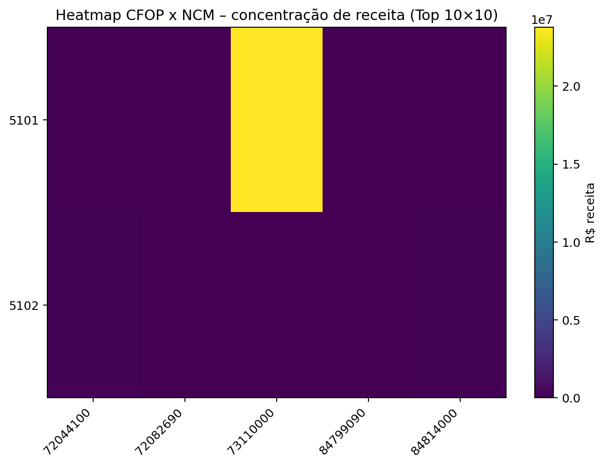
Tabela NCM
| NCM | Receita | Δ 26% |
|---|---|---|
| 73110000 | R$ 23.776.327,00 | R$ 1.426.579,62 |
| 72044100 | R$ 222.528,00 | R$ 57.857,28 |
| 84814000 | R$ 93.535,00 | R$ 5.612,10 |
| 84799090 | R$ 16.040,00 | R$ -56.781,60 |
| 72082690 | R$ 10.507,50 | R$ 630,45 |
14) Simulação líquida simplificada (crédito 0/50/80%)
Envelope conceitual de dependência de crédito.
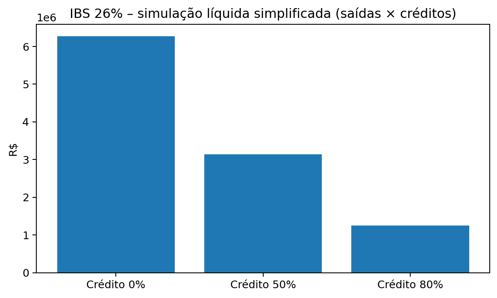
Leitura
Não é apuração oficial — serve para discussão de capital de giro e risco de crédito acumulado.
15) Itens com carga zero – Top CFOP
Onde o “salto” pode ser mais sensível.
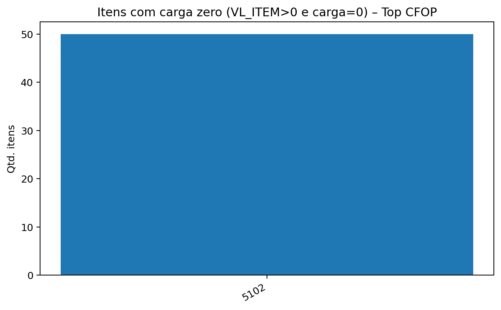
Top efetivas (itens)
| CFOP | NCM | VL_ITEM | Carga atual | Alíquota efetiva |
|---|---|---|---|---|
| 5102 | 84799090 | R$ 29,00 | R$ 3.208,00 | 11062,1% |
| 5102 | 84799090 | R$ 34,00 | R$ 3.208,00 | 9435,3% |
| 5102 | 84799090 | R$ 60,00 | R$ 3.208,00 | 5346,7% |
| 5102 | 84799090 | R$ 243,50 | R$ 3.208,00 | 1317,5% |
| 5102 | 84799090 | R$ 350,00 | R$ 3.208,00 | 916,6% |
| 5102 | 84799090 | R$ 550,00 | R$ 3.208,00 | 583,3% |
| 5102 | 84799090 | R$ 560,00 | R$ 3.208,00 | 572,9% |
| 5102 | 84799090 | R$ 600,00 | R$ 3.208,00 | 534,7% |
| 5102 | 84799090 | R$ 617,00 | R$ 3.208,00 | 519,9% |
| 5102 | 84799090 | R$ 650,00 | R$ 3.208,00 | 493,5% |
Trilha recomendada
Plano orientado por materialidade.
- 1) Simulação líquida completa: entradas x saídas, crédito acumulado e capital de giro.
- 2) Backlog por materialidade: Top CFOP + Top UF + Top NCM + Top clientes.
- 3) Parametrização e governança: NCM/CFOP/CST; validação por família/UF.
- 4) Precificação/contratos: cláusulas de repasse e matriz por praça/canal.
- 5) Monitoramento: rotina mensal e acompanhamento normativo.
Premissas utilizadas
Critérios e simplificações.
- Receita: soma de VL_ITEM (saídas).
- Carga atual: VL_ICMS + VL_PIS + VL_COFINS no C170.
- IBS/CBS: alíquota uniforme sobre receita (24/26/28).
- Δ: IBS (cenário) − carga atual documental.
- Heatmaps: recortes Top N para legibilidade.
- Simulação líquida simplificada: envelope conceitual (não substitui apuração real).
- Limitações: não incorpora regras setoriais completas e créditos reais das entradas.